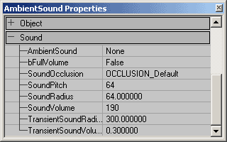
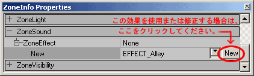

UDN
Search public documentation:
ExampleMapsSoundsJP
English Translation
한국어
Interested in the Unreal Engine?
Visit the Unreal Technology site.
Looking for jobs and company info?
Check out the Epic games site.
Questions about support via UDN?
Contact the UDN Staff
한국어
Interested in the Unreal Engine?
Visit the Unreal Technology site.
Looking for jobs and company info?
Check out the Epic games site.
Questions about support via UDN?
Contact the UDN Staff
サウンド テュートリアル
ドキュメントの概要: サウンドの様々な起動方法を分りやすく解説します。ビギナーに適していますが、数値化されたプロパティのリストは高度なユーザーにも便利です。 ドキュメントの変更ログ: 前回更新 Chris Linder (Main.DemiurgeStudios) 環境サウンドの設定を明確化。更新 Tom Lin (Main.DemiurgeStudios)、本書のまとめ。オリジナル作成者：Jason Lentz (Main.DemiurgeStudios)。はじめに
ここでは、AmbientSound、ZoneInfo Sound、アクタに関連するサウンド、およびトリガ可能なサウンドの配置方法と使用方法を学びます。本書は UnrealEd インターフェイスを使い慣れており、自分で raw サウンドファイルを作成したりアクセスしたことのある読者を対象にしています。自分でサンプルマップを作成するため、本書ではBSP ゾーン、StaticMeshes、Movers 、Trigger を備えたレベルが既に用意されているものとします。AmbientSound
AmbientSound を配置するには、アクタブラウザをオープンして [アクタ] --> [KeyPoint(キーポイント)] --> [AmbientSound] を開きます。次に自分のレベル内で右クリックすると AmbientSound アクタを配置できます。 このサウンドに関するすべての設定はプロパティ ウィンドウにあります。
このサウンドに関するすべての設定はプロパティ ウィンドウにあります。

以下で、各設定が何を制御するかについて説明します。| プロパティy | 説明 |
|---|---|
| AmbientSound | ここから、サウンドブラウザで選択したサウンドをこの AmbientSound アクタに適用します。これは、このアクタの環境ループ サウンド エフェクトです。AmbientSound はどの アクタ にも設定できます。アクタブラウザからの AmbientSound である必要はありません。サウンドは 3D ではモノラルになります。サウンドがステレオの場合 3D では再生できません。3D で再生できないため、サウンドは距離によって減衰しません。またサウンドの方向によってステレオ分割されることもありません。_SoundRadius(サウンド半径)_ 内にいる間はステレオ サウンドがフルボリュームで再生され、半径外ではまったく再生されません。 |
| bFullVolume | これが true にセットされていると、このアクタの環境音は <your_game>.ini の AmbientVolume の設定を無視します。ボリュームについて詳しくは下の_サウンドボリューム_ を参照してください。 |
| SoundOcclusion | SoundOcclusion には 4 つの設定があります: OCCLUSION_Default - 以下で説明する OCCLUSION_BSP のような振る舞いをします。OCCLUSION_None - サウンドはまったく閉塞されません。OCCLUSION_BSP - サウンドは BSP によって閉塞されます。OCCLUSION_StaticMeshes - サウンドは静的メッシュと BSP によって閉塞されます。上記で説明した設定によってアクタがサウンドを閉塞すると、サウンドの閉塞は半径を 65% 落とした時点で効果が現われます。サウンドの半径が小さくなったため、サウンドが小さくなります。閉塞は必ずしもすぐに現われるとは限りません。半径の変更が時間を補間し、移行がスムーズになります。 |
| SoundPitch | SoundPitch は 32 から 128 までの範囲です。デフォルトは 64 で、これは標準のピッチ／速度でサウンドを再生します。32 ではサウンドがオリジナルの半分の速度で再生され、再生時間は2倍になり、音程が 1 オクターブ下がります。128 ではサウンドが 2 倍の速度で再生され、再生時間は半分になり、音程は 1 オクターブ上がります。これはサウンドのピッチを上げたり下げたりするドップラー効果を無視した値です。 |
| SoundRadius | 半径 の値は Unreal ユニット内でサウンドの最大レンジの 1/100 です。よって、 半径 の値を 100 倍すると、サウンドが聞こえなくなる距離を得ることができます。半径の端での移行は完全にスムーズなわけではありません。一度サウンド半径内に踏み入ると、急にサウンドが聞こえるようになります。この音はかすかですが、それでも探っていくと移行ははっきり認識できるはずです。 |
| SoundVolume | サウンドボリューム は 0 (無音) から 255 (Unrealed のサウンドブラウザで再生するサウンドのボリューム) までの範囲です。サウンドを大きくすることはできず、ソフトにすることができます。255 を超えるボリュームを入力することはできますが、ボリュームの値をループするだけで、256=0、257=1、…という設定になります。_サウンドボリューム_ はすべての環境音を AmbientVolume (0.0 から 1.0) の倍率で拡縮します。_AmbientVolume_ は <your_game>.ini に定義されています。 |
| TransientSoundRadius | 環境音に影響なし。 |
| TransientSoundVolume | 環境音に影響なし。 |

ZoneInfo Sound
マップにサウンドを追加する別の方法として、ゾーン内に配置した ZoneInfo アクタからサウンドを追加することもできます。AmbientSound アクタの場合と同じように、ZoneInfo プロパティを開いて[Sound (サウンド)]項目内でAmbientSound フィールドにサウンドを割り当てます。ZoneInfo プロパティの[Sound] (サウンド)タブは期待されるほどゾーン全体には影響しません。これは AmbientSound アクタ と同様に機能します。エリアやゾーンを覆う包括的なブランケットサウンドを作成するには、充分なブランケット サウンドアクタができるまでサウンドのソースを割り当てる必要があります。ZoneEffects（ゾーン効果）
[ZoneSound] （ゾーン サウンド）タブで、[ZoneEffect] （ゾーン効果）を選択します。これを使用すると、このゾーンから聞こえるあらゆるサウンドが、フィルターをかけたように聞こえます。[ZoneEffect] （ゾーン効果）を使用するには、使用したい効果に近いエフェクトを選択し、[新規作成]ボタンをクリックします。
注意: これらの設定は EAX 3.0 SoundBlaster Audigy カードのみで対応しています。Unreal Ed が「EAX サウンドを使用する」にセットされ、「3DSound」を使用する設定になっていることを確認してください (これらの設定はシステムフォルダの UW.ini ファイルで指定します)。 [New](新規作成) をクリックすると ZoneInfo にその設定を使用するよう指示したことになります。Hallway(通路)、中位の広さの氷の宮殿の部屋、高級車を運転している効果、およびその間にあるものすべての ZoneEffect など、無数のデフォルト設定があります。しかし、希望する ZoneEffect が見つからなかったら、自分で作成することもできます。作成しようとする効果に近い ZoneEffect から[新規作成] ボタンを押します。3 つのタブが表示されますが、中央の設定「I3DL2Listener」だけが変更可能です。このタブを展開します。 以下にこれらの設定について説明します。
以下にこれらの設定について説明します。
| プロパティy | 説明 | 指定値 |
|---|---|---|
| AirAbsorptionHF | この設定を利用してサウンドが空中を伝達される様子を、様々な濃度 (霧状、ドライ、煙状など) で、シミュレートできます。数値が小さいほど、空中の吸水性は高くなります。 | [-100.0, 0.0] |
| bDecayHFLimit | この設定が True の場合、高周波の減衰時間が AirAbsorptionHF の設定で生成される限界値以下に自動的にとどまり、_DecayHFRatio_ から独立します。これは反響音の高周波域の減衰時間を不自然に長くせず、自然な減衰を維持するのに便利です。 | [True/False] |
| bDecayTimeScale | この設定が True の場合は、_EnvrionmentSize_ を変更すると、それに比例して DecayTime も変更されます。False の場合は、_EnvrionmentSize_ の変更は影響しません。 | [True/False] |
| bEchoTimeScale | 情報は今後追加 | [True/False] |
| bModulationTimeScale | 情報は今後追加 | [True/False] |
| bReflectionsScale | この設定が True の場合、_EnvironmentSize_ を変更すると、それに比例して ReflectionsDelay も変更されます、これにより壁がより遠くなり、結果的に空間が広がります。 | [True/False] |
| bReflectionsDelayScale | 情報は今後追加 | [True/False] |
| bReverbDelayScale | True の場合は、_EnvrionmentSize_ を変更すると、それに比例して ReverbDelay も変更されます。それ以外の場合は、_EnvironmentSize_ は影響を与えません。 | [True/False] |
| bReverbScale | この設定と ReflectionDelayScale の両方が True の場合は、_EnvrionmentSize_ が増加すると Reflections が減衰します。それ以外の場合は、_EnvironmentSize_ は Reflections に影響を与えません。 | [True/False] |
| DecayHFRatio | DecayTime でセットした時間に関連した高周波減衰時間の比率。設定が 1.0 でニュートラルです。減衰時間はすべての周波数について同じです。設定が高いほど、高周波域ではより明瞭で減衰時間の長い反響音になり、設定が 1.0 より小さい場合は、反響音がより自然になります。この値は EnvironmentSize の設定を変更して変えます。 | [0.1, 2.0 秒] |
| DecayLFRatio | 低周波域から中周波域での減衰時間比率 | [0.1, 2.0] |
| DecayTime | 中周波域での反響音域での減衰時間 | [0.1, 20.0 秒] |
| EchoDepth | エコーの深さ | [] |
| EchoTime | エコーの時間 | [] |
| EnvironmentDiffusion | この設定はエコーの濃度を制御します。設定が 1.0 では、複数のエコーが互いに混ざり合い、設定が 0.0 では、連続するエコーがそれぞれはっきりと分かれます。 | [0.0, 1.0] |
| EnvironmentSize | この設定は Unreal Unit で表した周囲の「部屋」のサイズを拡縮します。これを変更すると、下位のプロパティ (Reflections、ReflectionsDelay、Reverb、ReverbDelay_、_DecayTime) にも関連する調整が実行されます。 | [1.0, 100.0 unreal units] |
| HFReference | 高周波基準 | [] |
| LFReference | 低周波基準 | [] |
| ModulationDepth | モジュレーションの深さ | [] |
| ModulationTime | モジュレーション時間 | [] |
| Reflections | ルーム効果に関する反響レベルの初期ボリューム。狭い空間をシミュレートするには、設定値を大きくします。セミオープンな環境は、デフォルト設定のままにし、_Reverb_ 設定を小さくします。この値は EnvironmentSize の設定を変更することで変化します。 | [-10,000, 1,000 (dB/100)] |
| ReflectionsDelay | ソースからダイレクトパスへの到着時間とソースからの最初の反射までの時間のずれ。この値は EnvironmentSize の設定を変更して変えます。 | [0.0, 0.3 ミリ秒] |
| ReflectionsPan | 初期反射音のパンニング ベクタ | [] |
| Reverb | ルーム効果に関する遅い反響音レベル。この値は EnvironmentSize の設定を変更して変えます。 | [-10,000, 2,000 (dB/100)] |
| ReverbDelay | 初期反射音に関する遅い反響音の遅延時間。この値は EnvironmentSize の設定を変更して変えます。 | [0.0, 0.1] |
| ReverbPan | 遅い反響音のパンニングベクタ | [] |
| Room | これは Reflections と Reverb のマスタボリューム コントロールです。主サウンド バッファ (リスナー) のサウンド ミックスに追加する、反射と反響音の最大を指定します。 | [-10,000, 0.0 (dB/100)] |
| RoomHF | 高周波数で減衰することで、反射したサウンドをさらにカスタマイズします。 | [-10,000, 0.0 (dB/100)] |
| RoomLF | 低周波数で減衰することで、反射したサウンドをさらにカスタマイズします。 | [-10,000, 0.0 (dB/100)] |
| RoomRolloffFactor | この設定は Reflections と Reverb の両方を減衰させるメソッドで、EAX で使用可能な 2 つのうちの一つです。RoomRolloffFactor を 1.0 に設定すると、反射したサウンドは距離が 2 倍になるごとに 6 dB 減衰します。1.0 以外の値を設定すると、[(Source Listener Distance(ソース リスナー 間の距離)) - (Minimum Distance(最短距離))] で得られる縮尺ファクタと同じです。 | [0.0, 10.0] |
StaticMeshe およびMover のサウンド
サウンドは AmbientSound アクタのプロパティの設定や、ZoneInfo にサウンドを割り付けるのと同じ方法で、StaticMeshe に隠すこともできます。すべてのアクタは割り当てられたサウンドを持つことができます。プロパティ ウィンドウのサウンドのロールアウトをオープンし、希望するサウンドを指定するだけです。Mover は MoverSounds と言う特別な独自のロールアウトを持っており、もう少し柔軟です。 これについては ムーバーのチュートリアル で非常に詳しく解説されていますが、その名前自体が働きを説明しています。これはドアの開閉や、エレベータの動き、その他あらゆる動きのあるジオメトリのサウンドを設定するときに便利です。
これについては ムーバーのチュートリアル で非常に詳しく解説されていますが、その名前自体が働きを説明しています。これはドアの開閉や、エレベータの動き、その他あらゆる動きのあるジオメトリのサウンドを設定するときに便利です。
トリガ可能なサウンド
本セクションは今後追加します。ダウンロード
このサンプル用のコンテンツを含む圧縮されたアーカイブはこちらでダウンロードできます。- SoundsDemo.zip (Unreal Engine 2 ビルド2226用)
- EM_SoundsDemo_RT.zip (Unreal Engine 2 ビルド 2226用)